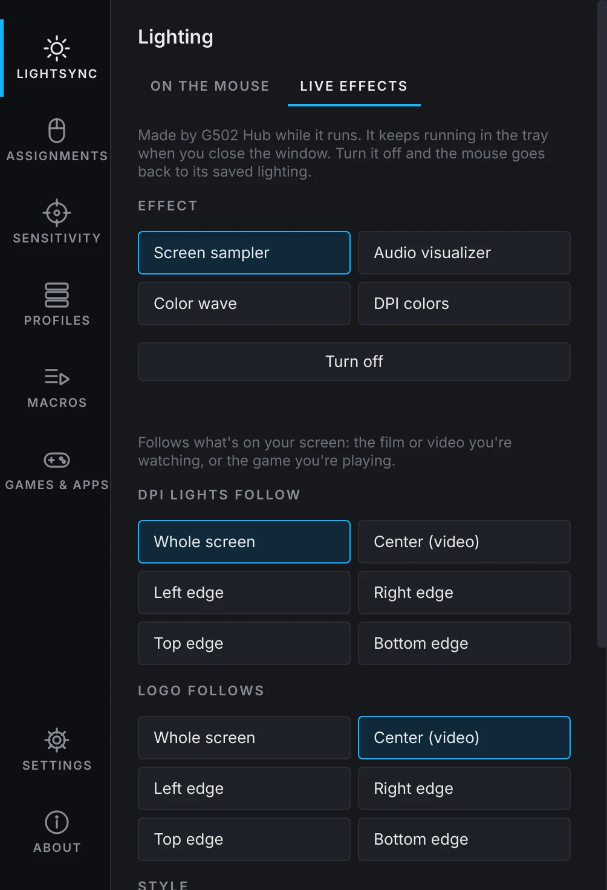
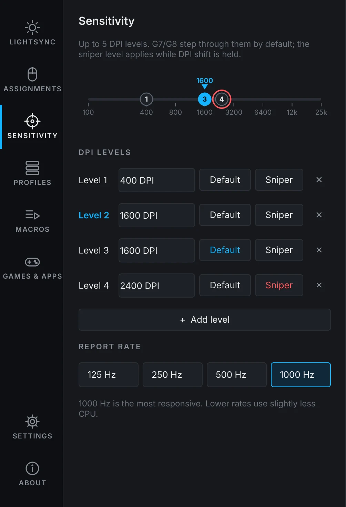
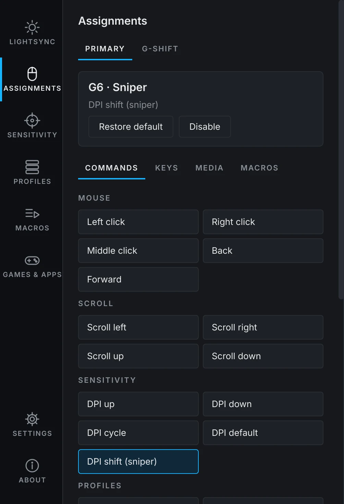
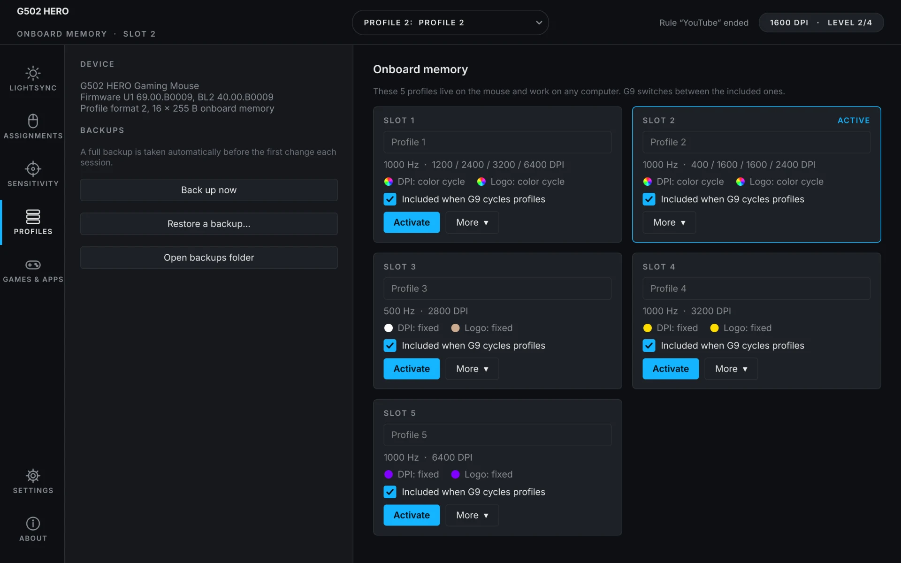
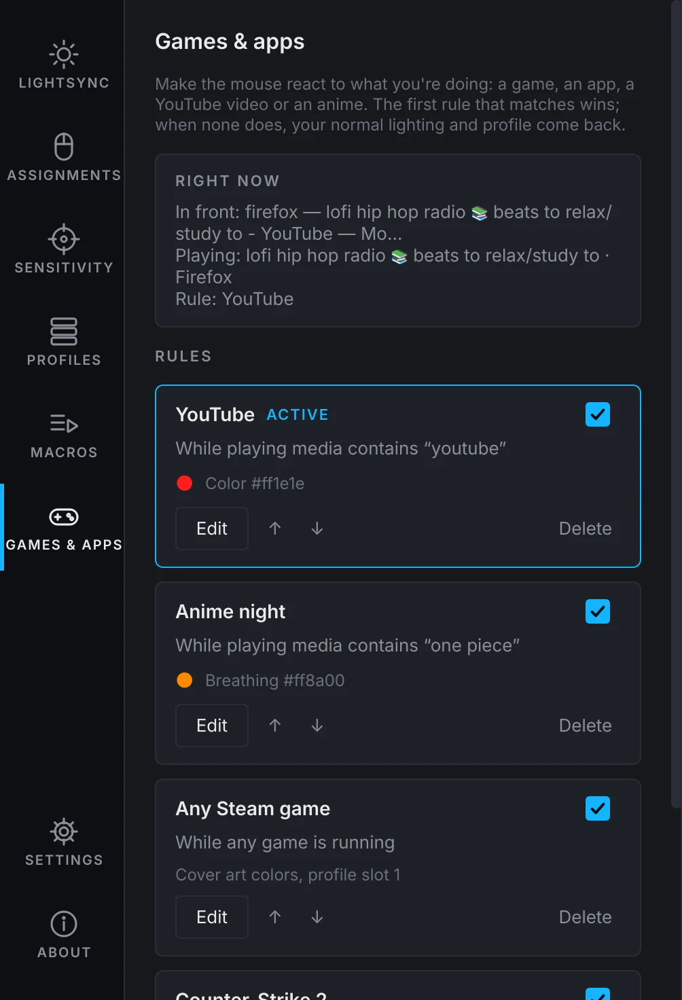

An unofficial G HUB alternative: DPI levels and sniper, five onboard profiles, button remapping with G-Shift, macros, and lighting that follows your screen, your music and your games. Free, open source, and no Windows anywhere.
curl -fsSL https://g502hub.ahmedxsaad.me/install.sh | sh
The picture of the mouse is Logitech's product photo, loaded from logitechg.com. It didn't load just now, but the effects below still run.
Screen sampler: the lights follow what's on your screen. Here, a demo film.
Effects saved on the mouse work anywhere. Live effects run from the tray and react to what's happening.

Drag a level on the track and the sensor follows while you drag.

Hold G-Shift and every button does something else.

G9 switches between them, with or without the app.

The first rule that matches wins. When none does, your normal lighting and profile come back on their own.

Through Valve's official Game State Integration: health on the logo, your team color on the DPI lights, a red beep that speeds up as the bomb counts down, a white flash for flashbangs. Set it up with one click.
Games like GTA V, Borderlands 3 or The Last of Us Part I talk to Logitech's lighting SDK. G502 Hub adds a small stand-in for it to that game's Proton prefix, so the game lights your mouse the way it does on Windows.
$ curl -fsSL https://g502hub.ahmedxsaad.me/install.sh | shInstalls what it needs with your package manager (it asks for your password), adds the permission rule that lets your user talk to the mouse, and puts G502 Hub in your applications menu. Remove it with the same line plus -s -- --uninstall.
$ yay -S g502-hubFor Arch, EndeavourOS, Manjaro and CachyOS. It builds the Proton bridge too, and updates with the rest of your system. See the package page.
$ git clone https://github.com/Ahmedxsaad/g502-hub && cd g502-hub $ sudo install -m644 udev/70-g502-hub.rules /etc/udev/rules.d/ $ sudo udevadm control --reload && sudo udevadm trigger $ python3 -m g502hub.gui
Needs Python 3.11+, PySide6 and numpy; the live effects also use GStreamer with PipeWire, PyGObject, dbus-fast and parec.
No. G502 Hub is a native Linux app that talks to the mouse directly. Wine only comes in if you want Proton games to drive the lights.
No. Screen and sound are analysed on your machine and never sent anywhere. The only download is the optional product photo of the mouse.
Yes. DPI, buttons, report rate and the saved lighting live in the mouse's own memory, on Linux, Windows or a console. Live effects and rules need the app running, which it does quietly in the tray.
Only the wired G502 HERO for now. If you have another G502 and want to help, open an issue with the info from the About page's "Copy for a bug report" button.
Yes, two kinds. Saved on the mouse, a macro plays on any computer: keys, media keys, clicks, scrolling and waits. Run by G502 Hub, it can also type text in your keyboard layout, repeat while you hold the button, or toggle on and off. Record one by typing, or build it step by step.